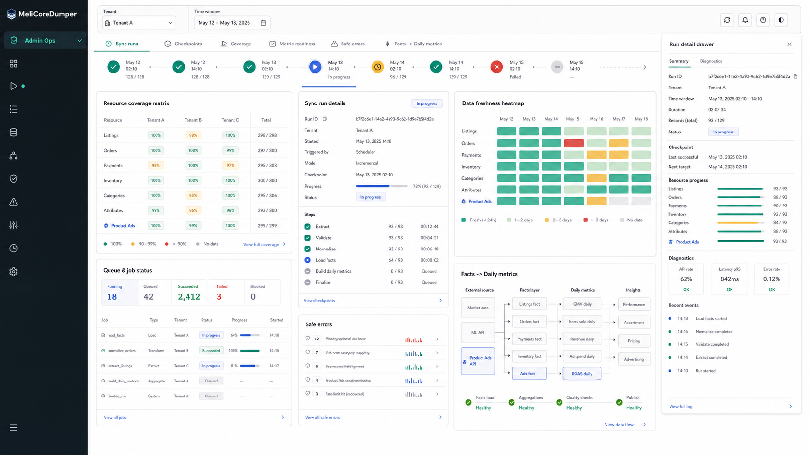
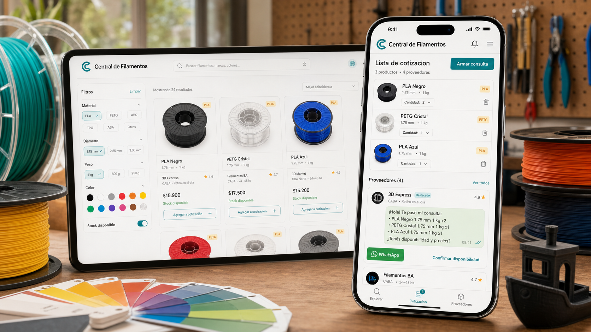
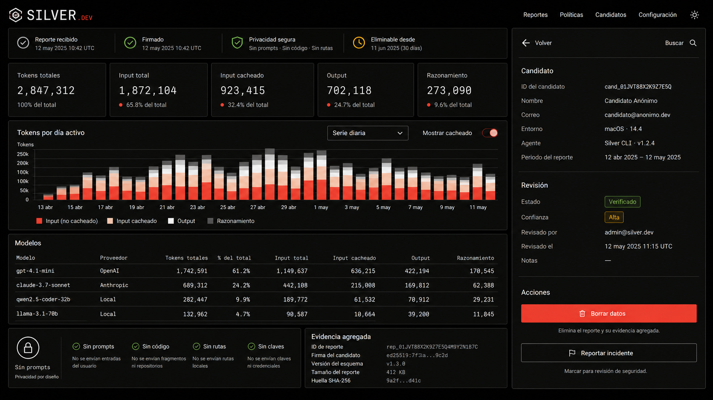
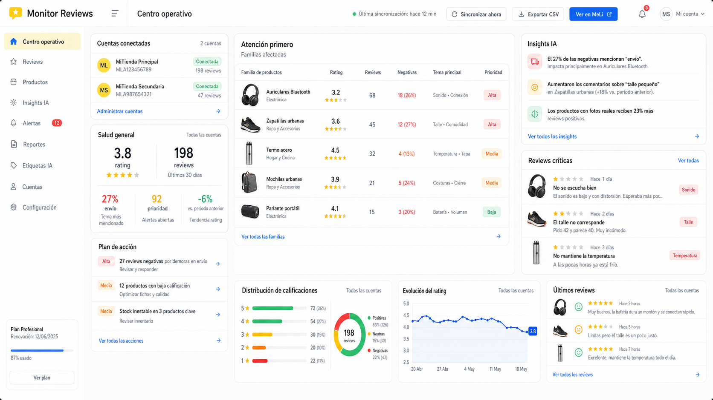

Recuperar el cambio de modo del GameSir Nova Lite
Qué combinación de firmware entre mando y receptor funciona, con pasos, capturas y el kit del dongle para descargar.
Leer la guíaSoy Gabriel Garcia. Diseño y construyo productos que combinan datos, APIs y criterio de producto. Estos son cuatro.

Sincroniza datos de Mercado Libre y los convierte en métricas, tendencias y anomalías.
Analítica para sellersCentraliza el stock de distintos proveedores para buscar, comparar y armar pedidos.
Filamentos 3DGenera métricas de uso de IA sin enviar prompts, respuestas, código ni secretos.
Uso de IA privadoCentraliza las reviews de Mercado Libre y muestra cómo evoluciona la valoración de cada producto.
Seguimiento de reviews


Qué combinación de firmware entre mando y receptor funciona, con pasos, capturas y el kit del dongle para descargar.
Leer la guíaCausa raíz, diagnóstico y reparación guiada cuando faltan OpenGL y Vulkan de AMD tras cambiar la placa de video.
Leer la guía